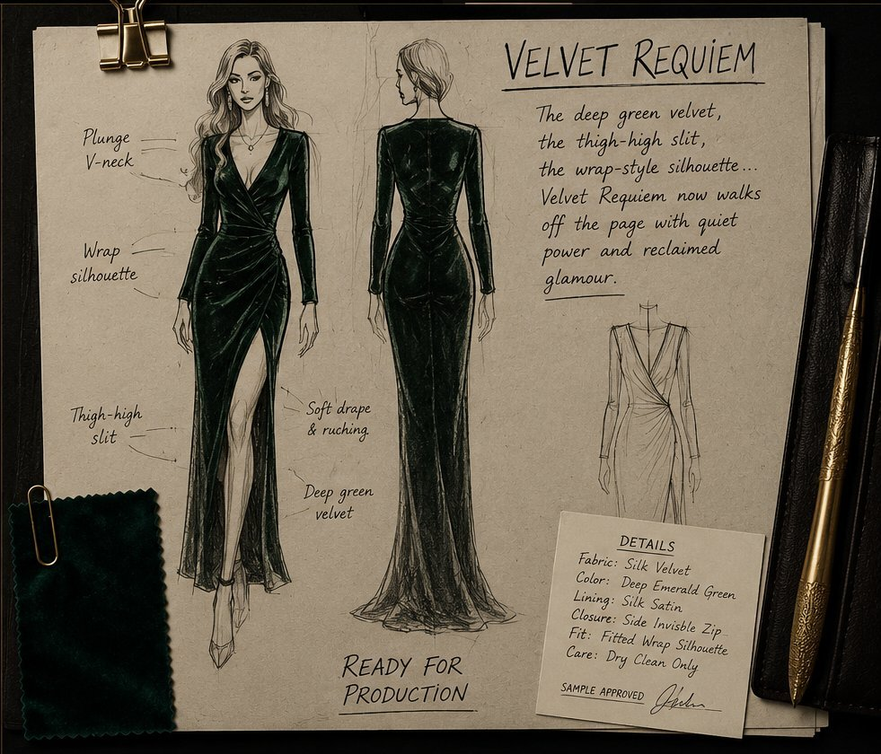

The more successfully she built the boutique, the more valuable she made it to the operation. Her talent was the cover. Her work was the vehicle.
London / Kalgoorlie, Western Australia. Fashion as the institutional frame. Deception as design — lies stitched into relationships, branding, and ambition. Nine episodes. 1981–1990.
Setting
London / Kalgoorlie
Years
1981–1990
Theme
Theft, betrayal, survival
Format
9 × 50 min

Wild and Free · Season One Vocal
Listen before reading. The song carries Abi’s emotional DNA.
Play Original Theme
The Friend Who Names Things
She does not rescue Abi by giving advice. She names the shape of the thing and leaves it on the table. Her letters are a private weather system running beneath the season.
The Man Who Stays
Slow, deliberate, almost painfully precise. He sees Abi before she knows she is being seen, and he offers steadiness without asking to be rewarded for it.
The Keeper of Beauty
The boutique stylist, the clown when pressure rises, and the person who understands that glamour is not frivolous when it is the only thing keeping someone upright.
The Daughter Who Sees
Warm, social, quick to flash and quick to make it right. She inherits Liam's charm and Abi's steel, which means she notices more than anyone wants her to notice.
Designer. Wife. Mother. The woman at the centre of a system that mistakes her talent for a hiding place.
Abi Fisher makes things before she explains them.
Fabric, food, figures, music — she reads patterns instinctively, then changes them when the pattern is wrong. Her hands usually know before her mouth does.
She is magnetic without performing it, precise without becoming cold, and more logical than people expect a woman in boho silk to be. In a room full of noise, she notices the seam, the ledger, the hesitation, the thing that does not sit where it should.
Her weakness is not innocence. It is hope. Abi has the old habit of believing people may still be better than the evidence suggests.
That belief makes her generous. It also leaves doors open.
At Savile & Sage, she builds with taste, discipline, and nerve. When the work is used against her, she does not stop being the woman who built it.
She learns to read the pattern.
The Husband Drawn to Belonging
Charming, restless, persuasive. He wants the room, the door, the invitation — and he mistakes access for importance until the cost lands on everyone else.
The Partner Drawn to Loyalty
He offers the address, the opportunity, the respectable beginning. But the books remember what people prefer to rename, and the first compromise was made before Abi arrived.
The Admirer Drawn to Truth
She understands the value of Abi's work with painful accuracy. Her admiration is real. So is the theft. Neither cancels the other, which is what makes her dangerous.
The Architect Drawn to Challenge
Not a designer. A diamond smuggler with an engineer's pleasure in invisible solutions. He does not want money most. He wants the satisfaction of a system so elegant it disappears.
EP101
The Moths
Five want something. The flame they will circle has not been built yet.
EP102
Toward the Flame
A word carries through an open door. Quietly, something else begins.
EP103
Savile and Sage
A name goes up over a door. A real address is the most useful thing of all.
EP104
The Lure of Georgette
An admirer at the table every Tuesday. Warmth and intent can both be true.
EP105
The Catwalk
The lights come up. A seam gives way where everyone can see it.
EP106
The Naked Truth
A signature almost right. Abi starts to read what the costume is hiding.
EP107
Velvet Requiem
Something Abi made turns up where it should not be, wearing a name that is not hers.
EP108
What Chiffon Cannot Cover
Some things no fabric can cover. What is admitted here cannot be taken back.
EP109
Burning
Everything has changed. The next move is hers.
I built something real. They used it for something wrong. The building was still real.
Abi Fisher — EP109
She keeps stopping. Like the telly when the signal goes. And her eyes go somewhere else.
Benedict Carrington — Series 2
You were the best of them, Edward. In thirty years you were the only one who understood that it was never about the diamonds.
Vittorio Romano — EP109
Truth survives. Not wins. Survives.
Edward Carrington — EP109
Careful. Even silk scars.
Sienna Ferro / Vivian Sinclair
Mia does things correctly. You do things truly. Not the same thing.
Manon Davis